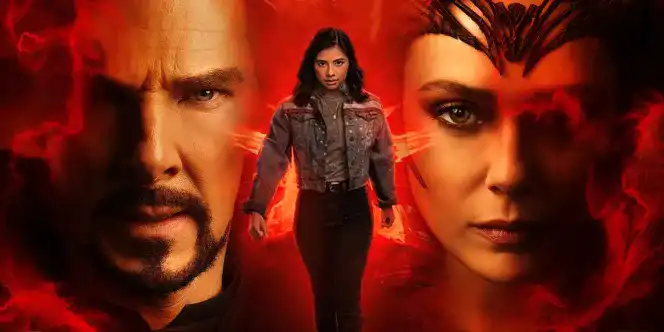
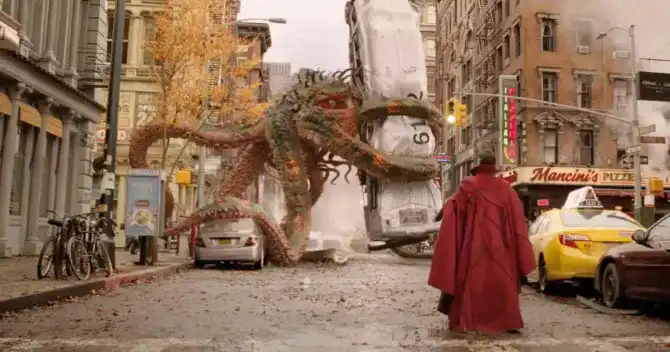
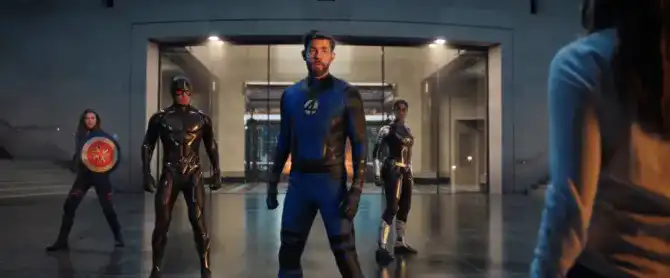
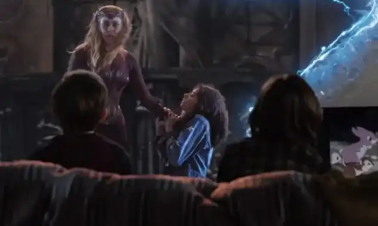
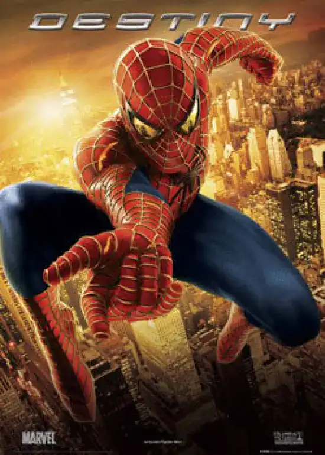
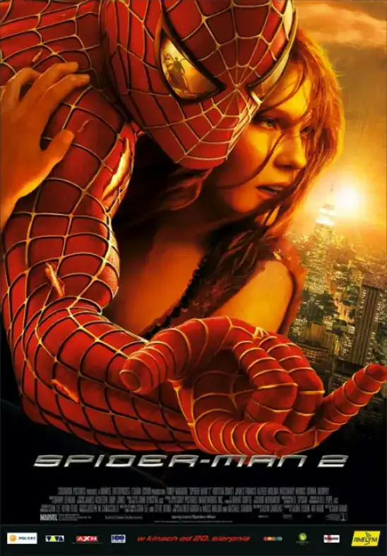
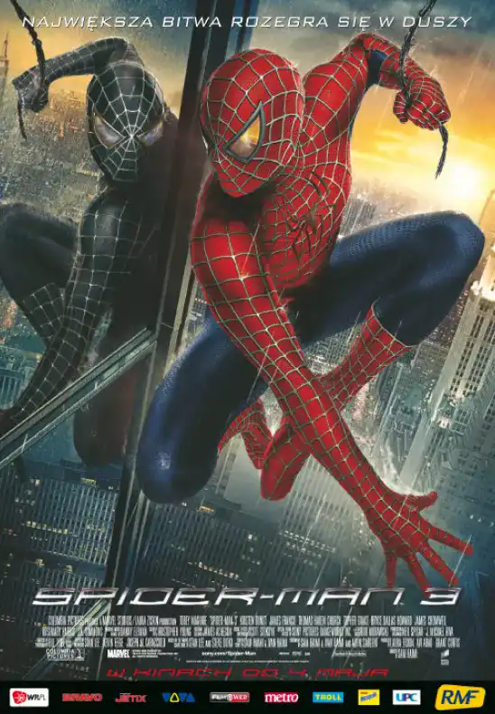

Accueil
Doctor Strange : In the Multiverse of Madness
Marvel Studios :
Le film ‘Doctor Strange : In the Multiverse of Madness’ est un film faisant parti de l’univers cinématographique de Marvel est un film produit par Marvel Studios sorti en 2022 , réalisé par Sam Raimi et un film d’horreur qui met en avant le personnage principal le « Docteur Strange » .
.webp)
Un début de problème ::
Après les évènements du précédent film « Spider-Man : No Way Home » sorti en 2021 , la réalité du Multivers a été altérer et dérégler. Pour réparer ça Strange sollicite l’aide de Wanda Maximoff , qui s’est ensuite révélée être la Sorcière Rouge. Elle devient rapidement son ennemie rapidement car elle veut retrouver ses enfants après avoir tout perdu, Strange détient la jeune America Chavez qui est la seule personne qui possède le pouvoir créer des portails et de voyager à travers le multivers sans problème. Docteur Strange est poussé à protéger America Chavez car Wanda veut absorbée son pouvoir et lors d’un combat apocalyptique dans un temple où est protégée America Chavez par les sorciers de l’univers 616 qui est l’univers principal des films Marvel.
Plus de détails :
Le début des cauchemars
Dans ce film on commence par le 1er acte où Gargantos poursuivant America Chavez dans les rues de New-York, à la grande surprise de Strange, qui l’a vue dans son rêve. Le démon tué par Strange et par Wong , Chavez explique que Gargantos la pourchassait pour récupérer son pouvoir, et révèle au Docteur Strange que les rêves qu’il fait sont réels : ce sont des visions d’un univers parallèle.
Un voyage multiversel
Par la suite , pourchassé par Wanda, le sorcier et Chavez fuient à travers plusieurs réalité et voyage dans le multivers. Après avoir atterris dans l’univers 838 où une Wanda vit avec ses enfants, la Wanda de l’univers 616 prend le contrôle avec un rêve passerelle qui permet de contrôler le corps de soi-même mais d’un autre univers. Les Illuminati, composé de Mordo, Captain Carter, Black Bolt, Dr Reed Richards et du professeur Charles Xavier vont tenter d’arrêter Wanda ainsi vont être battu.
Un combat déterminant
Plus tard, Wanda attrape America Chavez et va lui faire voyager dans l’univers où Wanda peut trouver ses enfants. Finalement, la Sorcière Rouge renonce à récupérer le pouvoir et décide de laisser la jeune America Chavez, ainsi Wanda décide de se suicider en détruisant une montagne et d’y rester sous les décombres.
Filmographie
Sam Raimi a produit et réalisé plusieurs films , notamment la trilogie Spider-Man des années 2000, mais il est notamment très connu pour ses films d’horreur Evil Dead.
Spider-Man (2002)
Spider-Man 2 (2004)
Spider-Man 3 (2007)
The Evil Dead (1981)